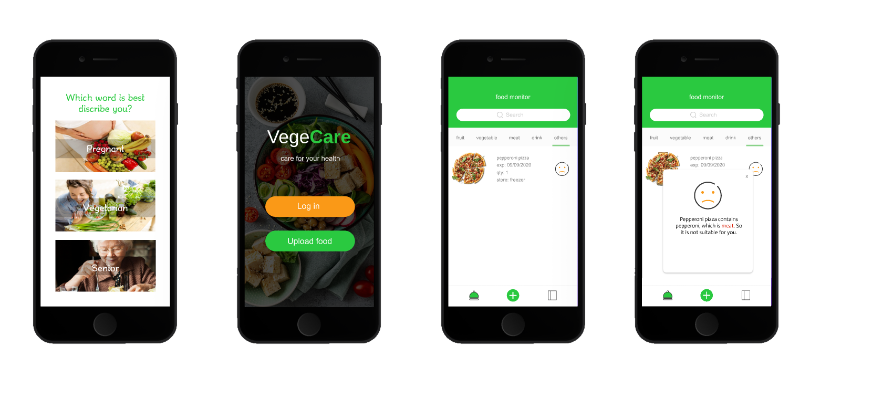
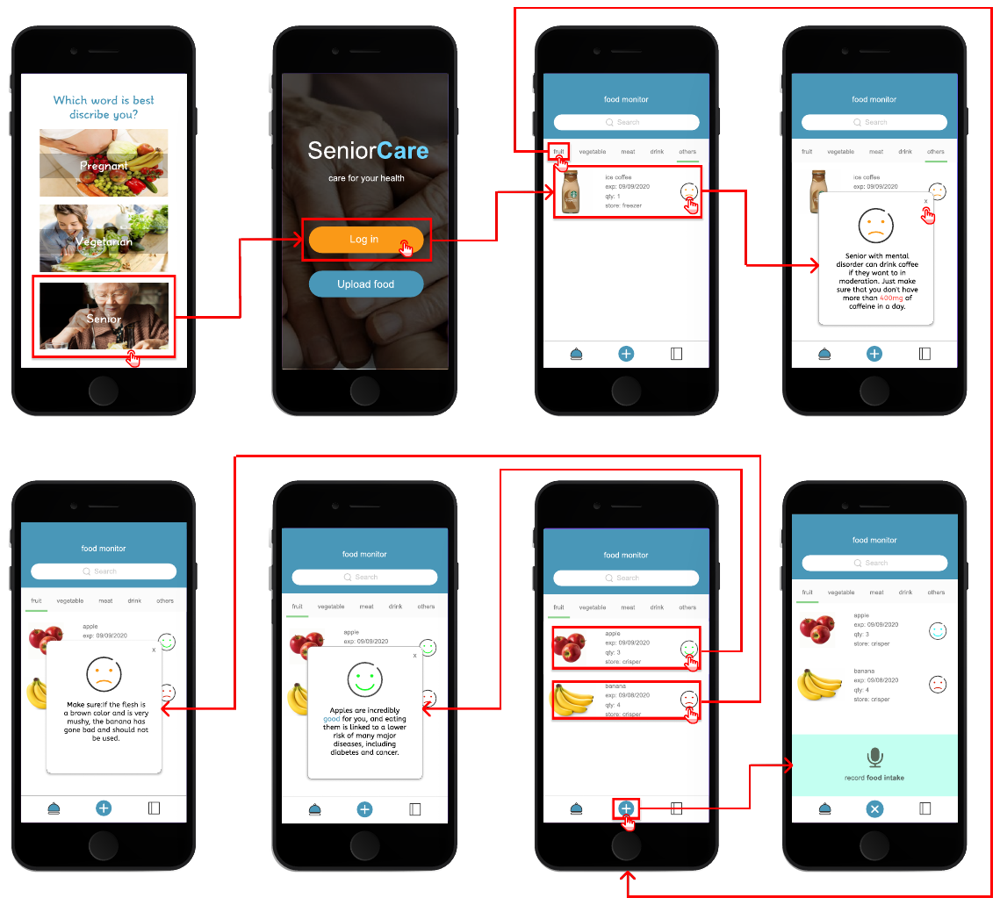
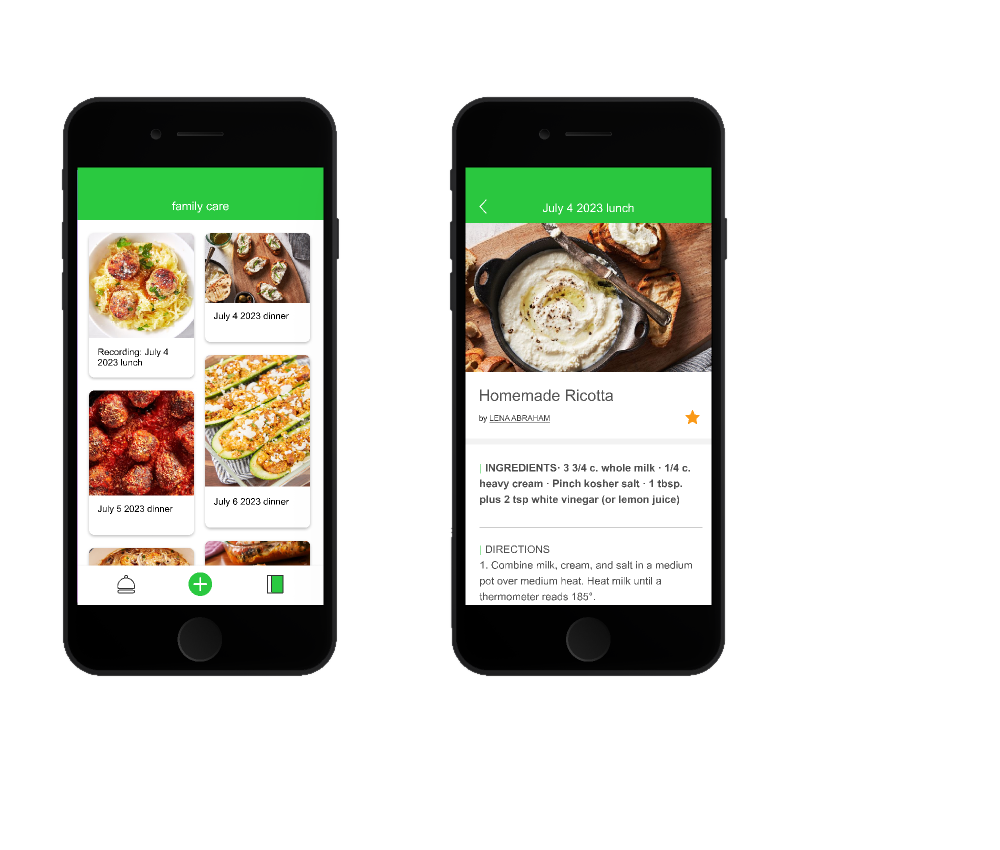

Care profiles
The pregnancy, vegetarian, and senior profiles offer different guidance for the same food.
Food at home / Camera and app / 2020 to 2024
and SeniorCare, a version for older adults
FoodCare uses a camera to recognise food and an app to explain what it finds. I worked on the research, screens, and prototypes, then explored how SeniorCare could make the idea easier for older adults to use.
01 / Problem
Choosing what to eat can take extra thought during pregnancy, when following a vegetarian diet, or when managing health needs later in life. People need to know why a food is suggested and whether the information is reliable.
The idea was to recognise food as it went into storage, then show advice based on the person’s chosen profile. In the research, people wanted clear explanations, reliable information, and a say in how their data was used.
Design questionCould a camera help people keep track of food while leaving them in charge of what to eat?
The pregnancy, vegetarian, and senior profiles offer different guidance for the same food.
A camera prototype recognises food, while the app shows the results.
Questionnaires and timed tasks helped us learn whether people understood the app and would want to use it.
02 / Design process
The design began with surveys and interviews, followed by sketches, screen layouts, and a clickable Figma prototype. The available records do not include every early screen. The wireframes and intermediate stage shown below are reconstructed from the original records; the integrated hardware build was still planned at that stage.
survey responses gathered across 10 days
interviews about everyday needs
FoodCare and SeniorCare screen states reviewed
participants completed four prototype tasks

The surveys and interviews brought up food, ageing at home, family support, and privacy. We mapped who might need help, what their days looked like, and what they would want to know about the system.
The early prototype tested a simple sequence: choose a profile, open the food list, find an item, read the explanation, and return to the list.

This screen map shows a stage between the first wireframes and the clickable design. Food examples helped us work through warnings, suggestions, photo and QR uploads, confirmation messages, recipes, and the way back home.

FoodCare uses green for selected options, orange for the main entry button, and mint for the voice input design. Explanations open over the food list. SeniorCare uses the same layout in blue. The clickable screens let people try the profiles, food advice, and voice recording panel.

Five people tried four tasks. Opening the food advice took the longest: 13 seconds on average, and 15 seconds for the two older participants. Both older adults needed someone to show them where to tap.
The table shows which changes reached the prototype and which still need to be built and tested.
| What we learned | Design response | Status |
|---|---|---|
| People could not see why advice was given | Add a written explanation for each food status | Implemented |
| Older adults requested fewer words and voice support | Blue Senior mode and a voice recording panel | Prototyped |
| Recommendation task averaged 13 s; older users averaged 15 s | Make the whole row clickable, explain the status in words, and return focus when it closes | Next / not retested |
| The network connection made cloud speech unreliable | Play recorded messages through the MP3 module in the working prototype | Implemented fallback |
This original Figma prototype has eight connected screens in the senior interaction page. Choose a profile, open the food list, and try the buttons.
Choose Senior
Tap Log in
Open a food status or the + action
Close the dialog or voice panel to return
03 / System
The camera identifies a food, the chosen profile determines which guidance to show, and the app explains the suggestion so the person can decide what to do.

The paper storyboard follows a shopping list and delivery through to food storage and a spoken response. It helped us work out what the person, app, and camera each needed to do before building the screens and Raspberry Pi prototype.
An early concept sketch; this sequence was not tested with users.Link an online grocery list, choose a photo, or scan a QR code for the list.
CHOOSE WHAT TO SHAREA Raspberry Pi 4, camera, and two servos follow an item as it enters storage.
CAMERA HARDWAREOpenCV handles the camera stream; a TensorFlow Lite model supports food detection.
COMPUTER VISIONThe app uses the profile alongside the food, quantity, expiry date, storage location, and dietary information.
GUIDANCE FOR EACH PROFILEThe app shows a reason and recipe; an MP3 module can play a preloaded voice response.
READ OR HEAR THE EXPLANATIONWe tried Google Cloud Speech, but the network connection was unreliable. The working prototype used recorded audio messages instead.
This is a research prototype. The dietary information and food recognition would need professional testing before people could rely on it at home.
04 / Interaction flow
This map brings together the three pages in the original Figma file: Vege, senior interaction, and Senior. Solid lines show working links. Dashed lines show possible next steps that were drawn but not connected in the prototype.
Most tasks return to the food list. The family view also leads to shared meals and recipes.
Choose Pregnant, Vegetarian, or Senior to see the matching guidance.
Log in opens the food list. Upload food starts a separate upload.
Search or choose a category to see a food’s expiry date, quantity, storage location, and status.
Open a message to see why a food might not suit the profile, might be spoiled, or could be a good choice.
Close × → return to inventoryThe green plus opens the microphone panel, then becomes a close button so it is easy to return to the list.
Close × → return to inventoryThe confirmation screen offers a gallery button and a close button. Both are shown in the design, but their next screens are not linked.
Gallery / close → connection still to build
The diary groups shared meals by date. The planned next step is to open a meal and read its ingredients and cooking instructions.
Back ← return to family diaryUser: selects a profile. System: uses it to choose the food guidance.
User: taps Log in. System: opens the food list with search and categories.
User: selects a status. System: opens a written explanation for that food.
User: closes the message. System: keeps the same place in the list so another food can be checked.
User: taps the plus, speaks, then closes. System: shows the microphone while recording.
User: uploads a food image. System: confirms the upload and shows gallery and close buttons.
User: opens a dated meal card. System: shows the recipe, ingredients, and directions.
Design intent: the eight screens in Senior mode explore clearer messages, voice support, and simpler choices.
05 / Paired project
Built on the FoodCare serviceSeniorCare keeps the profiles, food list, and advice from FoodCare. It explores stronger contrast, simpler choices, a voice input panel, and spoken confirmations, with ideas for involving family members too.
Select Senior mode to see guidance for older adults.
Log in to open the food list.
Upload food data by voice note when typing or scanning is inconvenient.
Place the food in the crisper as part of the normal household routine.
Hear a confirmation after the camera recognises the category.
Monitor expiration through the food storage list.
Open a dietary recommendation before deciding what to eat.
The wider idea would let a family member add care information, receive updates, and help with food or medication routines. A smart speaker, pill organiser, and health sensors were ideas for a later version and were not all built into the prototype.
Three younger adults and two older adults tried the same four tasks.
The test pointed to a few clear changes: make the card look tappable, shorten the advice, and make the close and back controls easier to find. Voice and gesture options could also help people who find the screen difficult.
06 / Evidence & technology
People could follow FoodCare’s screens, but they were less sure they would find it useful or choose to use it. In SeniorCare, the harder tasks also left people feeling less confident about the system.
Average System Usability Scale score from six people using the detailed prototype.
Six people tested FoodCare. Their feedback helped guide the design, but cannot tell us how everyone would use it.
Participants wanted to know that the camera and dietary information were reliable before following a suggestion.
People wanted clear choices about logging in, granting permission, and uploading information.
In SeniorCare, small buttons and crowded advice cards made people less confident using the app.
Tools and materials
FoodCare and SeniorCare are research prototypes. Food recognition, dietary data, privacy, and use without an internet connection still need work before everyday use. Cloud speech was explored but did not work reliably; the pill organiser, health sensors, and family alerts remained ideas for a later version.
The video opens on YouTube. Open video directly ↗